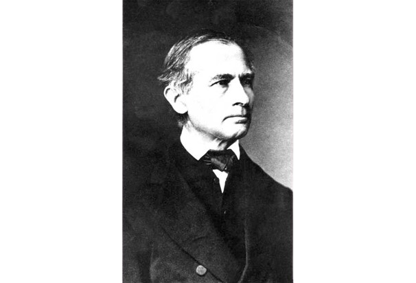
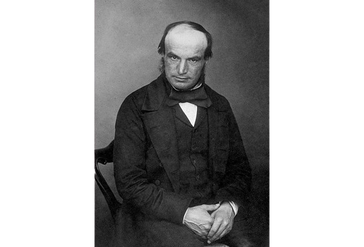
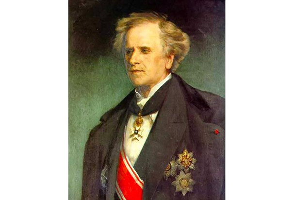
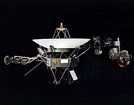

|
| Galle Johann
Gottfried: |
 |
| 1830–33 m. mokėsi Berlyno universitete; | |
| Nuo 1835 m. dirbo Berlyno observatorijoje; | |
| 1851–97 m. Vroclavo universiteto profesorius ir observatorijos direktorius; | |
| 1846 m., remdamasis U. J. J. Le Verrier teoriniais skaičiavimais, atrado Neptūno planetą. | Johann
Gottfried Galle |
| Adams John Couch: |
 |
| 1843 m. baigė Kembridžo
universiteto šv. Jono koledžą; |
|
| 1857–59 m. šv. Andriejaus
universiteto, nuo 1859 Kembridžo universiteto profesorius; |
|
| nuo 1861 m. Kembridžo
observatorijos direktorius; |
|
| Jo vardu pavadintas
asteroidas nr. 1996 ir Neptūno žiedų sistemos tolimiausias
žiedas. |
John
Couch Adams |
| Le Verrier Urbain
Jean Joseph: |
 |
| 1854–70 m. ir 1873–77 m.
Paryžiaus observatorijos direktorius; |
|
| 1846 m. pagal Urano
orbitos trikdymus apskaičiavo tuo metu nežinomos Neptūno
planetos padėtį ir orbitą; |
|
| U. J. J. Le Verrier
vardu pavadinti asteroidas nr. 1997, vienas Neptūno
žiedas. |
Urbain
Jean Joseph Le Verrier |
| Voyager 2 |
||
| Organizacija: |
NASA |
 |
| Šalis: |
JAV |
|
| Programa: |
Voyager programa |
|
| Misijos tikslas: |
Jupiteris, Saturnas, Neptūnas
ir Uranas |
|
| Misijos tipas: |
praskriejimas |
|
| Paleidimo data: | 1977 m. rugpjūčio 20 d. |
|
| Paleidimo įrenginys: |
nešančioji raketa Titan III-E |
|
| Masė: |
721,9 kg |
|
| Misijos rezultatai: |
sėkminga |
|